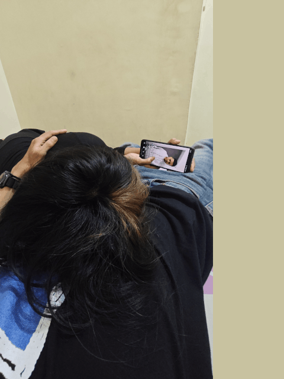
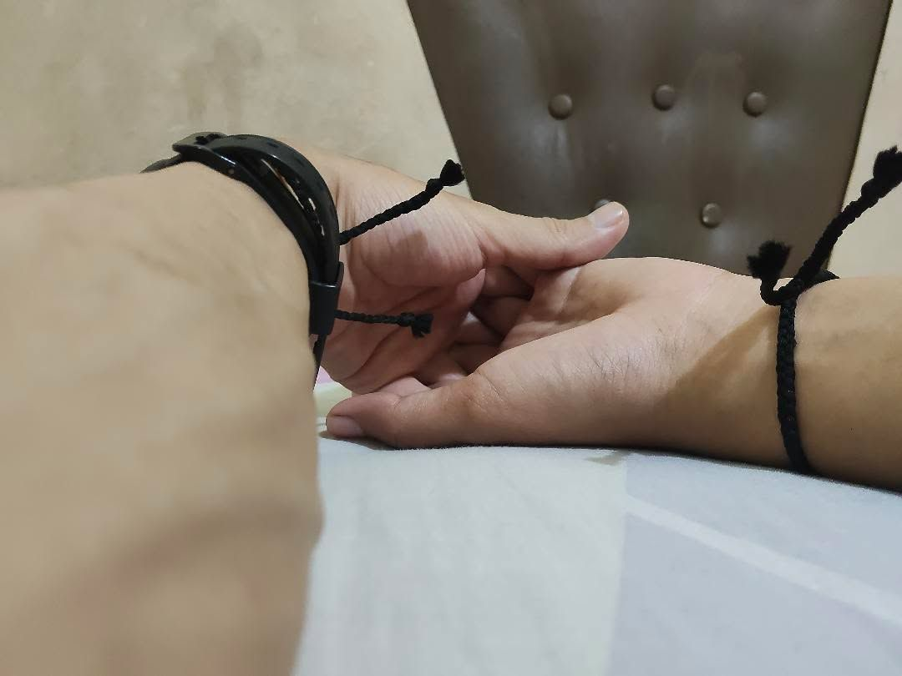
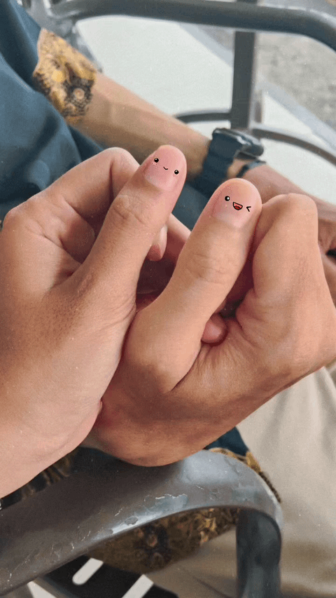
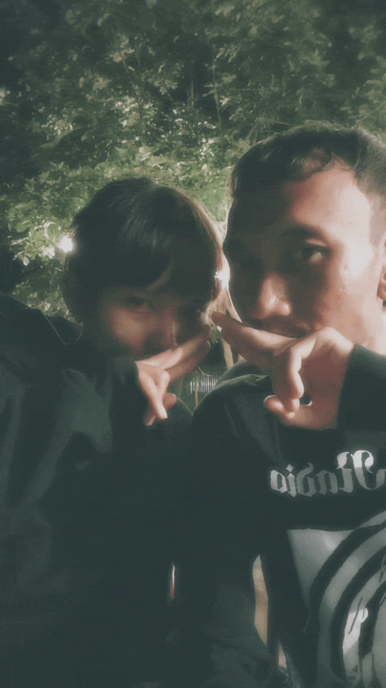
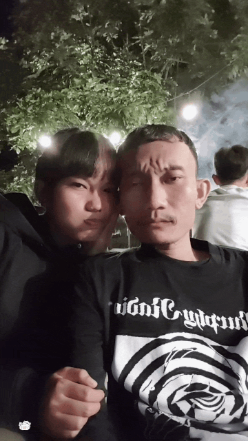
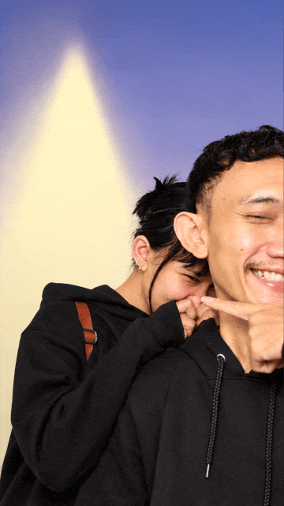

A LITTLE CORNER OF MY HEART
Kesayangan aku, Ica.
this is for you.
A little reminder of how loved you are, written just for you.
take your time, Ca.
01 —To My Dearest Ica 🌙
you are more than enough.

Ica, if there is one thing I hope you never have to question, it is your place in my heart.
At times when things feel emotionally overwhelming and your mind is filled with quiet fears and unspoken confusions, I want this place to be the calmest space for you to just breathe. You don't have to pretend to be strong here, and you don't have to force yourself to talk if you're not ready yet.
I know that talking about what you feel—whether it's fear, doubt, or the heavy confusion tangled inside your chest—is never easy for you. I understand how exhausting it can be to carry all of that by yourself.
You don't have to be the happiest version of yourself to be loved by me. You don't have to have everything figured out, know exactly what to say, or make every difficult feeling disappear before coming close to me.
You can be sleepy, quiet, overwhelmed, emotional, or unsure of what you need. You can have days when you don't feel like talking much.
You are still Ica that i know through all of it.
I don't only want the easy days with you, Ca. I want the ordinary days, the quiet evenings, the silly conversations, and those moments when neither of us has anything particularly interesting to say.
But please remember this, Ca... You don't have to figure out all the answers to the questions in your head tonight, tomorrow, or anytime soon. Don't force yourself to understand everything right away. Give yourself permission to just rest. Take all the time you need.
You never have to earn your place in my heart by being okay all the time.
You already matter to me. Not because of what you can give me, but because you are you.
Aku selalu bilang ke kamu, Kak Prima selalu bersyukur bisa dipertemukan dengan ica dari banyaknya kemungkinan-kemungkinan yang mungkin saja tidak akan pernah terjadi. Kalau kamu ingat kita pernah nonton film Past Live, In-Yun, kita bisa bertemu bukan dari sebuah kebetulan, melainkan dari hubungan atau koneksi yang sudah terjalin di Universe lain.
Aku juga pernah bilang, kita sudah dipertemukan antara banyaknya manusia, dan sekarang aku ingin kita bisa menjaga hubungan ini dengan baik.
Ca, I hope you let yourself believe that.
♡
02 — WHEN LIFE FEELS HEAVY
you don't have to carry everything alone.

Ica, I know there are days when everything feels like a little too much for you.
Sometimes there are so many things happening inside your head that explaining them feels exhausting. Sometimes you might not even know why you feel the way you do.
You don't have to turn every feeling into a conversation before I can care about you.
If you don't know how to explain it, that's okay, Ca. We don't always need the perfect words. If you feel overwhelmed, we can take things slowly. If you want someone to listen, I'm here.
I want to be someone you can come to when things feel heavy. Someone you can tell the little things to, not just the things that seem important enough to share.
You don't have to make sense of every feeling before you deserve tenderness.
Maybe you're right when you say that I can't truly feel what you're feeling. I can't fully understand what it's like to be inside your mind when you're confused, scared, overwhelmed, or caught between feelings you don't even know how to explain. And you're right. I can only understand a little of what you're going through, because I'm not the one carrying everything that you carry inside your heart.
But even if I can't feel your pain the way you do, it doesn't mean I don't want to understand it. I want to listen to you, even when your thoughts come out tangled and unfinished. I want to be patient with you, even when you don't have the words to explain what's wrong. And I want to hold space for all the feelings you may not know what to do with yet.
Until I can, let these words be a small reminder that there is someone who cares about you very, very much.
Someone who wants to understand you. Someone who wants you to feel safe being yourself.
Dan ingat juga kata-kata aku soal, jangan pernah kamu lawan akunya ketika kamu lagi berusaha melawan kebingungan, ketakutan atau perasaan ragu lainnya. Tapi lawanlah perasaan bingung, takut atau ragu dan lainnya yang muncul di pikiran kamu.
♡
03 — WHEN YOU GO QUIET
even when you don't know what to say.

Ica...
I know that sometimes you go quiet. Sometimes you need to step back from everything for a little while, and sometimes finding the words to explain what's happening inside you can feel like too much.
You don't always have to be the one who starts a conversation, How to explain your feelings, or how to tell me that you need a little reassurance.
It's okay to let me reach out gently, to ask how you're doing, and to remind you that I'm thinking of you.
If you feel overwhelmed, you don't have to explain everything perfectly before we can share a little moment of closeness.
You can tell me as little or as much as you want. We can start with a simple “Aku cape Kak Pima” or even just a little “Kak Pima, Ica lagi pengen diem dulu”
And if you need some quiet time, I can respect that, too. I want us to find a way to stay connected that feels comfortable for both of us.
You don't have to find your way back to me with perfect words. We can find a solution for both of us to communicate better to reach each other.
I want closeness to feel like comfort, not another thing you have to work hard for.
You can just be you, Ca.
♡
04 — Our Promises
let me remind you of our promises.

Remember the agreement we made together: Whenever emotions run high, and our minds are clouded, never make any decisions.
Jangan pernah ambil sebuah keputusan konyol saat pikiranmu sedang bingung, takut, atau ragu.
Don't let a moment of fear or anxiety tear down what we have built so patiently together.
I don't need you to be a perfectly predictable person. I don't need every day with you to feel like a romantic movie. I want the real, everyday version of us.
The random questions. The sleepy conversations. The little jokes that only we understand. The days when we miss each other.
Momen-momen saat kita bertemu. Jalan-jalan naik motor ke Besitang, ke tempat yang baru pertama kali kamu kunjungi sama aku. Dempet-dempetan di bus murni. Ngomongin penumpang bus murni. Kasih nama kucing di Luwih si Arap karena matanya mirip Reza Arap. Makan nasi goreng Almer yang enak banget 10/10 rasanya, aku nangis di wisma karena bahagia banget akhirnya bisa ada di samping kamu memeluk erat kamu dan momen-momen lainnya.
There isn’t a single part of me that regrets getting to know you, Ica. If I had to live it all over again, I’d still choose to find you, to know you, and to let you become a part of my life. Every moment, every feeling, and every memory with you will always be something I’m grateful for. You are a person I feel lucky to know and love.
I want to keep discovering the little things that make you, Ca.
Because loving you isn't just about having someone to call mine. It's about caring about your world and making room for the person you are.
I hope being loved by me can feel like a soft place to land.
♡
05 — MY HEART, MY HOPE
my heart is still here, for you Ca.

If you ever wonder what I feel about us, I want you to hear this clearly from me.
I still choose you.
I still want to share my days with you, to know how your days went, to hear about the little things that happened that day, to laugh with you over something silly, and to be someone you can reach for when you want a little company.
I still want the quiet moments, the affectionate moments, the ordinary moments, and the memories we haven't made yet.
My feelings for you aren't only there when everything is easy. You don't become less important to me just because you're having a difficult day or because you don't know what to say.
Ica, I'm not asking you to have every answer about us today. We don't have to figure out our entire future in one conversation.
I want us to have the chance to understand each other, to talk about what we need, and to let our relationship grow through the choices we make together.
I still believe in us. I still have hope for our dream, and I would love for us to keep writing it together. You are safe, you are loved, and we will get through this together.
I want you to feel good being close to me, too. I want our love to have room for your feelings and mine, for honesty, laughter, reassurance, and kindness.
I still have so much hope for the little world we can build together.
Take all the time you need. 🖤
♡
06 — ONE LAST THING, BABY
if you ever need to be reminded.

Ica, kesayangan aku,
If you ever come back to this little website on a day when you feel tired, uncertain, overwhelmed, or simply in need of some love, I hope you find a little comfort here.
I hope you remember that you are allowed to have difficult days. Your feelings matter, even when they're difficult to explain.
You don't have to be endlessly strong, endlessly cheerful, or endlessly certain about everything to be someone worth loving.
And I hope you remember that you are deeply cherished by me.
Ica, I wish I could put all the warmth I feel for you and let you stay there for as long as you need.
I still want our little moments. I still want our conversations. I still want to learn more about you, laugh with you, hold you close, and make memories that belong to us.
We don't have to know every chapter of our story yet, Ca. We can take it one day at a time, with honesty, kindness, and care for each other.
Aku Cinta Kamu Ca, Aku Sayang Banget Sama Kamu and I still hope for a future with you.
You are someone who has become genuinely special to me, someone I think about with tenderness, and someone I would love to keep sharing life with.
So whenever you need a reminder, come back to these words.
You are precious to me. And there is so much warmth in my heart for you.
I hope we get to keep discovering all the beautiful little things that our story can still hold.
Imagine me holding your hand, brushing your hair gently, kissing your forehead, and whispering:
“It's okay, Ca. You don't have to figure everything out right now. I'm here, and you are so loved.”
With all my love,
PRIMA ♡
always with love, always with hope.